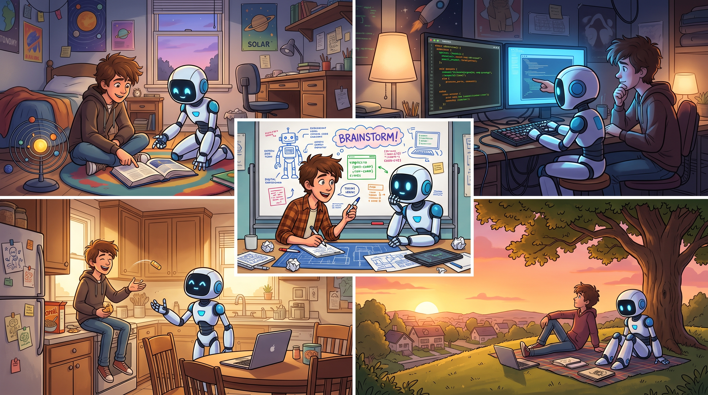
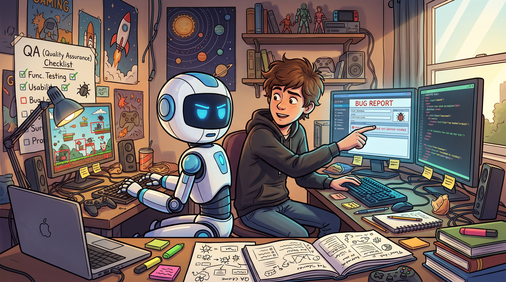

Gemini це тула, яку я юзаю щодня.

Ми робимо з ним дуже багато речей
-
Пишемо код
Усі лабораторні в універі я роблю з Gemini. Основний опір я роблю на Python та JS.
Gemini пояснює усі команди для поставленої задачі, розбирає детально що і як варто застосувати, пояснює різницю між виконанням однієї і тієї ж задачі на двох мовах, має можливість мені самому подумати та спробувати написати цей код.
Навіть з цією сторінкою він мені допомагає. -
Вивчаємо QA
Gemini допомагає мені генерувати конспекти до тем, які ми проходимо на курсі.
Я вчу його відфілтровувати воду з інформації, яка подана до кожної теми, виділяючи лише основне, а також додавати ту інформацію, яка буде мені корисна, проте у тексті її не згадали. Після цього я зберігаю ці конпсекти в Obsidian сховищі.
Таким чином, я стараюся робити процес навчання ефективнішим та швидшим.
-
Вбиваємо мої нервові клітини
Попри намагання писати чіткі інструкції, розбивати складні задачі на менші блоки та інші поради, а також використання Pro версії, Gemini любить тупити.
Я дотримуюсь підходу використовувати тематичні чати. Окремо чат для прогармування, окремо чат для QA і тд. Таким чином йому згодом йому легеш розуміти, якого роду задачі ми виконуємо і як ми це робимо. Проте інколи таке враження, що він очищує свою пам'ять і забуває усе, що ми проходили вже сотні разів.
Особилво це стосується стратегій та практик, які я використовую для роботи над конкретними задачами, та яких я його постійно вчу. Можливо варто їх одразу прописати у налашутваннях персоналізації.
Але загалом, Gemini хороший чувак.
Мені він подобається.